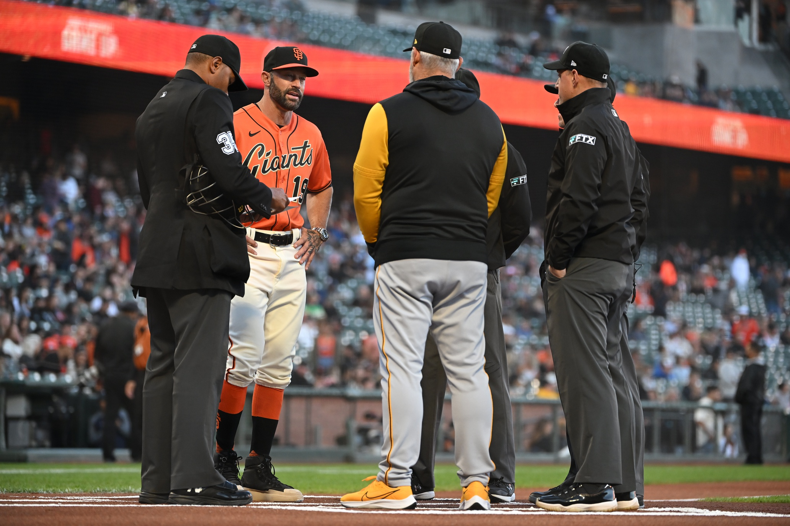
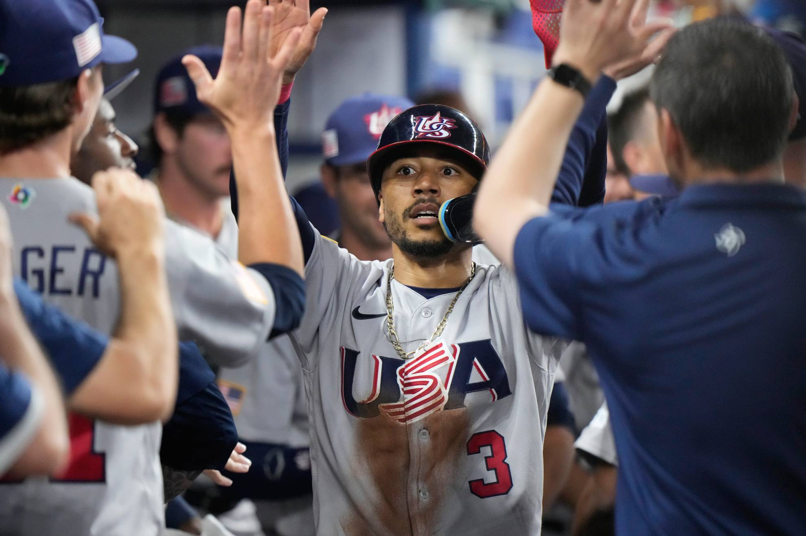

El béisbol (o baseball en inglés) es un deporte de equipo jugado entre dos conjuntos de 9 jugadores cada uno. El objetivo principal es golpear una pequeña pelota con un bate para recorrer un circuito de cuatro bases dispuestas en un diamante y anotar la mayor cantidad de carreras (runs) posibles antes de que terminen las 9 entradas (innings) que componen un partido. A diferencia de la mayoría de los deportes populares, el béisbol no se juega contra reloj, sino por turnos de ataque y defensa.


